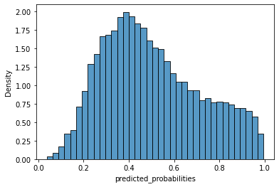
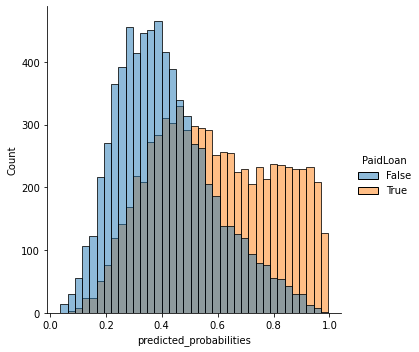
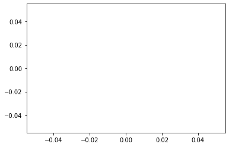

XGBoost
Training XGBoost with the credit-bias dataset.
import pandas as pd
data = pd.read_csv("data/credit-bias-train.zip")
data.head()
| NewCreditCustomer | Amount | Interest | LoanDuration | Education | NrOfDependants | EmploymentDurationCurrentEmployer | IncomeFromPrincipalEmployer | IncomeFromPension | IncomeFromFamilyAllowance | ... | Mortgage | Other | Owner | Owner_with_encumbrance | Tenant | Entrepreneur | Fully | Partially | Retiree | Self_employed | |
|---|---|---|---|---|---|---|---|---|---|---|---|---|---|---|---|---|---|---|---|---|---|
| 0 | False | 2125.0 | 20.97 | 60 | 4.0 | 0.0 | 6.0 | 0.0 | 301.0 | 0.0 | ... | 0 | 0 | 1 | 0 | 0 | 0 | 0 | 0 | 1 | 0 |
| 1 | False | 3000.0 | 17.12 | 60 | 5.0 | 0.0 | 6.0 | 900.0 | 0.0 | 0.0 | ... | 0 | 0 | 1 | 0 | 0 | 1 | 0 | 0 | 0 | 0 |
| 2 | True | 9100.0 | 13.67 | 60 | 4.0 | 1.0 | 3.0 | 600.0 | 0.0 | 0.0 | ... | 1 | 0 | 0 | 0 | 0 | 1 | 0 | 0 | 0 | 0 |
| 3 | True | 635.0 | 42.66 | 60 | 2.0 | 0.0 | 1.0 | 745.0 | 0.0 | 0.0 | ... | 0 | 0 | 0 | 0 | 1 | 0 | 1 | 0 | 0 | 0 |
| 4 | False | 5000.0 | 24.52 | 60 | 4.0 | 1.0 | 5.0 | 1000.0 | 0.0 | 0.0 | ... | 0 | 0 | 0 | 0 | 0 | 0 | 1 | 0 | 0 | 0 |
5 rows × 40 columns
X_df = data.drop('PaidLoan', axis=1)
y_df = data['PaidLoan']
y_df.describe()
count 58003
unique 2
top True
freq 29219
Name: PaidLoan, dtype: object
from sklearn.model_selection import train_test_split
train_x, test_x, train_y, test_y = train_test_split(X_df, y_df, test_size=0.25, random_state=42)
Runs a grid search to find the tuning parameters that maxisimise the area under the curve (AUC)
train_x is the training data frame with loan details and train_y is the default target column for training
The method returns the best parameters and corresponding AUC score.
from sklearn.model_selection import GridSearchCV
from xgboost.sklearn import XGBClassifier
from typing import Tuple
def find_best_xgboost_model(train_x: pd.DataFrame, train_y: pd.Series) -> Tuple[dict, float]:
scale_pos_weight = (len(train_y) - train_y.sum()) / train_y.sum()
param_test = {
'max_depth': [1, 2, 4, 8],
'learning_rate': [0.05, 0.06, 0.07],
'n_estimators': [10, 100, 200]
}
gsearch = GridSearchCV(estimator=XGBClassifier(
objective='binary:logistic',
scale_pos_weight=scale_pos_weight,
seed=27),
param_grid=param_test, scoring='roc_auc', n_jobs=-1, cv=8)
gsearch.fit(train_x, train_y)
return gsearch.best_params_, gsearch.best_score_
best_params, best_score = find_best_xgboost_model(train_x, train_y)
/Users/rui/venvs/blog-source/lib/python3.9/site-packages/xgboost/sklearn.py:1146: UserWarning: The use of label encoder in XGBClassifier is deprecated and will be removed in a future release. To remove this warning, do the following: 1) Pass option use_label_encoder=False when constructing XGBClassifier object; and 2) Encode your labels (y) as integers starting with 0, i.e. 0, 1, 2, ..., [num_class - 1].
warnings.warn(label_encoder_deprecation_msg, UserWarning)
[18:29:24] WARNING: /Users/travis/build/dmlc/xgboost/src/learner.cc:1095: Starting in XGBoost 1.3.0, the default evaluation metric used with the objective 'binary:logistic' was changed from 'error' to 'logloss'. Explicitly set eval_metric if you'd like to restore the old behavior.
print('Best Parameters: {} | Best AUC: {}'.format(best_params, best_score))
Best Parameters: {'learning_rate': 0.07, 'max_depth': 8, 'n_estimators': 200} | Best AUC: 0.7408776972949906
Using the xgboost model parameters, it predicts the probabilities of defaulting.
best_params_, best tuning parameterstrain_x, training dataframe with loan detailstrain_y, default target column for trainingtest_x, testing dataframe with loan detailstest_y, default target column for testing- The result is a series of probabilities whether loan entry will default or not and corresponding model's AUC score
from sklearn.metrics import roc_auc_score
def xgboost_predict(best_params_: dict, train_x: pd.DataFrame, train_y: pd.Series, test_x: pd.DataFrame,
test_y: pd.Series) -> Tuple[list, float]:
scale_pos_weight = (len(train_y) - train_y.sum()) / train_y.sum()
xgb_model = XGBClassifier(objective='binary:logistic',
scale_pos_weight=scale_pos_weight,
seed=27,
max_depth=best_params_['max_depth'],
learning_rate=best_params_['learning_rate'],
n_estimators=best_params_['n_estimators']
)
xgb_model.fit(train_x, train_y)
predicted_probabilities_ = xgb_model.predict_proba(test_x)[:, 1]
auc_ = roc_auc_score(test_y, predicted_probabilities_)
return predicted_probabilities_, auc_
predicted_probabilities, auc = xgboost_predict(best_params, train_x, train_y, test_x, test_y)
print("AUC: {}".format(auc))
[18:29:33] WARNING: /Users/travis/build/dmlc/xgboost/src/learner.cc:1095: Starting in XGBoost 1.3.0, the default evaluation metric used with the objective 'binary:logistic' was changed from 'error' to 'logloss'. Explicitly set eval_metric if you'd like to restore the old behavior.
AUC: 0.7372207434311429
Filters the original loan dataframe to just include the loans from the test dataframe and then it adds the predicted probabilities.
loans_df_, original loan dataframetest_index, indices from the test dataframespredicted_probabilities_, the probabilities forecasted by the XGBoost model- Returns the loans dataframe with predictions
import numpy as np
def prepare_test_with_predictions(loans_df_: pd.DataFrame, test_index: pd.Index, predicted_probabilities_: np.array)\
->pd.DataFrame:
loan_test_df = loans_df_.loc[test_index]
loan_test_df['predicted_probabilities'] = predicted_probabilities_
return loan_test_df
loans_with_predictions_df = prepare_test_with_predictions(data, test_x.index, predicted_probabilities)
loans_with_predictions_df.head()
Visualisation
import seaborn as sns
sns.histplot(loans_with_predictions_df['predicted_probabilities'], stat='density')
<AxesSubplot:xlabel='predicted_probabilities', ylabel='Density'>

sns.displot(loans_with_predictions_df, x="predicted_probabilities", hue="PaidLoan")
<seaborn.axisgrid.FacetGrid at 0x140bea280>

ROC and AUC
Based on actuals and predicted values, it calculates their false positive rate (fpr), the true positive rate (tpr). It also returns the corresponding thresholds used as well as the value for the area under the curve.
actuals, series of actual values indicating whether the loan defaulted or notpredicted_probabilities, series of predicted probabilities of the loan defaulting- Return a unique series of false and true positive rates with corresponding series of thresholds and value for total area under the curve.
from sklearn.metrics import roc_curve, auc
def get_roc_auc_data(actuals: pd.Series, predicted_probabilities: pd.Series) -> \
Tuple[np.array, np.array, np.array, float]:
fpr, tpr, thresholds = roc_curve(actuals, predicted_probabilities, pos_label=1)
auc_score = auc(fpr, tpr)
return fpr, tpr, thresholds, auc_score
fpr, tpr, thresholds, auc_score = get_roc_auc_data(loans_with_predictions_df['PaidLoan'], loans_with_predictions_df['predicted_probabilities'])
sns.lineplot(fpr)
/Users/rui/venvs/blog-source/lib/python3.9/site-packages/seaborn/_decorators.py:36: FutureWarning: Pass the following variable as a keyword arg: x. From version 0.12, the only valid positional argument will be `data`, and passing other arguments without an explicit keyword will result in an error or misinterpretation.
warnings.warn(
/Users/rui/venvs/blog-source/lib/python3.9/site-packages/numpy/lib/nanfunctions.py:1368: RuntimeWarning: All-NaN slice encountered
r, k = function_base._ureduce(
---------------------------------------------------------------------------
KeyboardInterrupt Traceback (most recent call last)
<ipython-input-34-1507e2960d14> in <module>
----> 1 sns.lineplot(fpr)
~/venvs/blog-source/lib/python3.9/site-packages/seaborn/_decorators.py in inner_f(*args, **kwargs)
44 )
45 kwargs.update({k: arg for k, arg in zip(sig.parameters, args)})
---> 46 return f(**kwargs)
47 return inner_f
48
~/venvs/blog-source/lib/python3.9/site-packages/seaborn/relational.py in lineplot(x, y, hue, size, style, data, palette, hue_order, hue_norm, sizes, size_order, size_norm, dashes, markers, style_order, units, estimator, ci, n_boot, seed, sort, err_style, err_kws, legend, ax, **kwargs)
701 p._attach(ax)
702
--> 703 p.plot(ax, kwargs)
704 return ax
705
~/venvs/blog-source/lib/python3.9/site-packages/seaborn/relational.py in plot(self, ax, kws)
497 err = "estimator must be None when specifying units"
498 raise ValueError(err)
--> 499 x, y, y_ci = self.aggregate(y, x, u)
500 else:
501 y_ci = None
~/venvs/blog-source/lib/python3.9/site-packages/seaborn/relational.py in aggregate(self, vals, grouper, units)
412 columns=["low", "high"]).stack()
413 else:
--> 414 cis = grouped.apply(bootstrapped_cis)
415
416 # Unpack the CIs into "wide" format for plotting
~/venvs/blog-source/lib/python3.9/site-packages/pandas/core/groupby/generic.py in apply(self, func, *args, **kwargs)
224 )
225 def apply(self, func, *args, **kwargs):
--> 226 return super().apply(func, *args, **kwargs)
227
228 @doc(
~/venvs/blog-source/lib/python3.9/site-packages/pandas/core/groupby/groupby.py in apply(self, func, *args, **kwargs)
857 with option_context("mode.chained_assignment", None):
858 try:
--> 859 result = self._python_apply_general(f, self._selected_obj)
860 except TypeError:
861 # gh-20949
~/venvs/blog-source/lib/python3.9/site-packages/pandas/core/groupby/groupby.py in _python_apply_general(self, f, data)
890 data after applying f
891 """
--> 892 keys, values, mutated = self.grouper.apply(f, data, self.axis)
893
894 return self._wrap_applied_output(
~/venvs/blog-source/lib/python3.9/site-packages/pandas/core/groupby/ops.py in apply(self, f, data, axis)
211 # group might be modified
212 group_axes = group.axes
--> 213 res = f(group)
214 if not _is_indexed_like(res, group_axes):
215 mutated = True
~/venvs/blog-source/lib/python3.9/site-packages/seaborn/relational.py in bootstrapped_cis(vals)
393 return null_ci
394
--> 395 boots = bootstrap(vals, func=func, n_boot=n_boot, seed=seed)
396 cis = ci_func(boots, ci)
397 return pd.Series(cis, ["low", "high"])
~/venvs/blog-source/lib/python3.9/site-packages/seaborn/algorithms.py in bootstrap(*args, **kwargs)
83 resampler = integers(0, n, n, dtype=np.intp) # intp is indexing dtype
84 sample = [a.take(resampler, axis=0) for a in args]
---> 85 boot_dist.append(f(*sample, **func_kwargs))
86 return np.array(boot_dist)
87
~/venvs/blog-source/lib/python3.9/site-packages/seaborn/algorithms.py in f(x)
64 if isinstance(func, str):
65 def f(x):
---> 66 return getattr(x, func)()
67 else:
68 f = func
~/venvs/blog-source/lib/python3.9/site-packages/numpy/core/_methods.py in _mean(a, axis, dtype, out, keepdims, where)
159 um.clip, a, min, max, out=out, casting=casting, **kwargs)
160
--> 161 def _mean(a, axis=None, dtype=None, out=None, keepdims=False, *, where=True):
162 arr = asanyarray(a)
163
KeyboardInterrupt:
